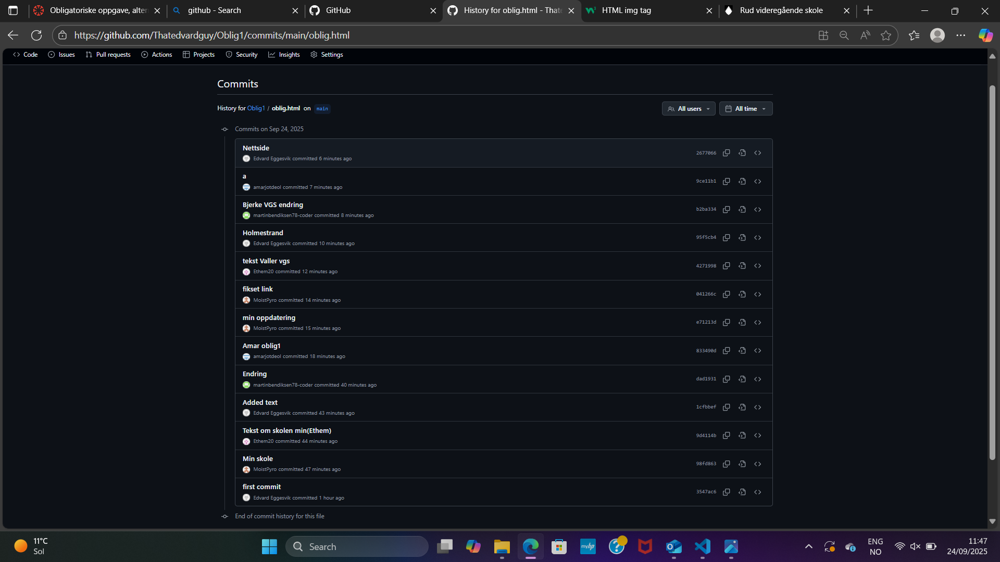
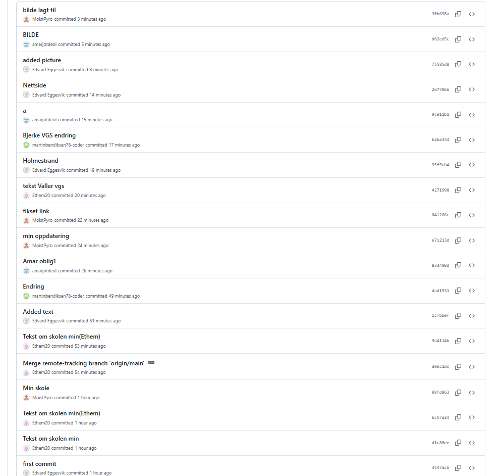
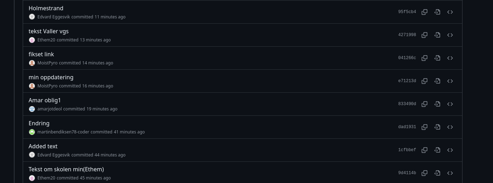

Skoler
Rud videregående skole
er en kombinert videregående skole i Bærum. Skolen har 7 utdanningsprogram i tillegg til opplæring for minoritetsspråklige og tilrettelagt opplæring. Skolen har vært studiested for Fagskolen Oslo Akershus og har fortsatt opplæring for studenter tilknyttet fagskolestudier
Rud VGS sin nettside
Drammen videregående
skole er en av de største videregående skolene i Viken fylke og ligger sentralt i Drammen. Skolen har rundt 1200 elever og tilbyr flere utdanningsprogram, blant annet studiespesialisering, idrettsfag og toppidrett. Den er kjent for sitt mangfoldige miljø, moderne fasiliteter og et sterkt fokus på både faglige og sosiale aktiviteter. Skolen samarbeider tett med lokalmiljøet og legger vekt på å forberede elevene til høyere utdanning og arbeidsliv.
Drammen VGS sin nettside
Valler videregående skole
ønsker en åpen dialog med foreldre/foresatte. Et godt samarbeid mellom hjem og skole fremmer elevenes læring og vi inviterer foreldre til å komme med tilbakemeldinger til skolens ledelse og lærere via e-post.
Valler VGS sitt link, klikk for informasjon!:) ;)
Holmestrand VGS
Hensikten med felles skoleregler for elever ved de videregående skolene i Vestfold er å gi elevene et trygt og godt læringsmiljø med tydelige rammer som fremmer god orden og atferd. Det skal bidra til at de utvikler kunnskap, holdninger og ferdigheter til å kunne mestre livene sine.
holmestrand-vgs
Bjerke videregående skole
Skolen ligger i Groruddalen mellom Linderud senter og Linderud t-bansestasjon. Skolen tilbyr utdanningsprogram som Idrettsfag og Studiespesialisering. Skolen er kjent for sitt inkluderende miljø, engasjerte lærere og et aktivt elevråd.
Nettsiden til Bjerke VGS


